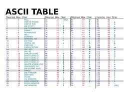

CODICE ASCII
Il codice ASCII è un sistema che permette di rappresentare i caratteri, come lettere, numeri e simboli, in formato numerico che i computer possono capire.
Ogni lettera, numero o simbolo ha un numero specifico che lo rappresenta. Ad esempio, la lettera "A" corrisponde al numero 65, "B" è 66, e così via. Anche i numeri che usiamo nel computer, come il "1" o il "2", hanno un valore ASCII: "1" è 49, "2" è 50...
Il codice ASCII è molto utile per far comunicare il computer con le persone, perché permette di trasformare i caratteri in numeri che il computer può gestire facilmente.
Esistono 128 simboli nel codice ASCII, che coprono lettere maiuscole, minuscole, numeri e simboli di punteggiatura. Ad esempio:
"A" è 65
"B" è 66
"1" è 49
"@" è 64
 
torna a capitolo 3
Paragrafo 2
CODIFICA DEI NUMERI
La codifica dei numeri è il processo di rappresentazione dei numeri in vari formati che i computer possono comprendere e utilizzare.
I computer, infatti, non usano numeri come noi li vediamo, ma li trasformano in codici binari (composto solo da 0 e 1) per poterli elaborare.
Ci sono vari tipi di codifica dei numeri, tra cui i più comuni sono:
1 Codifica decimale: È il sistema che usiamo tutti i giorni, che va da 0 a 9. Ogni cifra ha un valore in base alla sua posizione (come nelle operazioni matematiche).
2 Codifica binaria: È il sistema che i computer usano per rappresentare i numeri. In binario, i numeri sono scritti solo con 0 e 1. Ad esempio, il numero 2 in binario è scritto come 10.
3 Codifica esadecimale: Questo sistema usa 16 simboli: i numeri da 0 a 9 e le lettere A, B, C, D, E, F per rappresentare i valori da 10 a 15. L'esadecimale è utile perché è più compatto rispetto al binario e si usa spesso in informatica per scrivere colori, indirizzi di memoria.